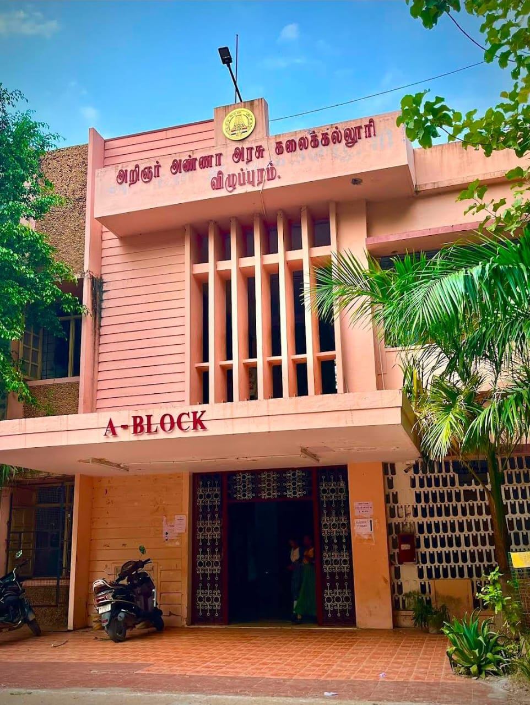

Arignar Anna Government Arts College, Villupuram, established in 1968, is a public institution offering undergraduate and postgraduate programs in arts, science, and commerce. Affiliated with Thiruvalluvar University and recognized by the UGC, the college provides a range of courses including Tamil, English, History, Economics, Physics, Chemistry, Mathematics, Computer Science, and more. Located in Villupuram, Tamil Nadu, it serves as a significant center for higher education in the region.